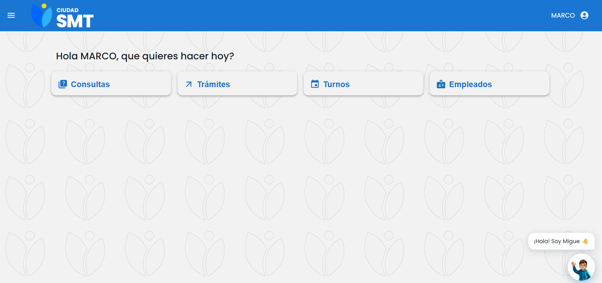
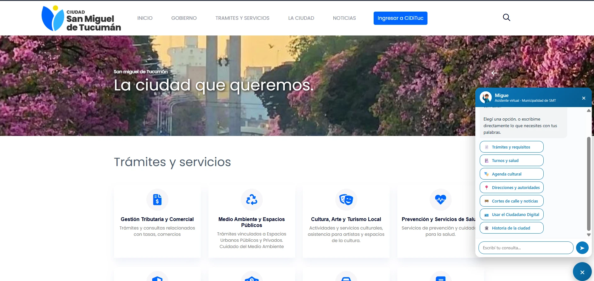

En la websmt.gob.arTocá el botón de Migue, abajo a la derecha.
En Telegram@MigueSMT_botAbrí el chat y escribile.
Migue escuchar
Escuchamos al vecino de otra manera.
Cada pregunta nos dice qué necesita la ciudad, cuándo y qué le falta encontrar.
Migue lo que ve el Municipio
Panel de control de Migue
Cada conversación es un dato.
0consultas
0resueltas
0vecinos distintos
0audios transcriptos
Qué le pregunta la ciudad
3 de 4son trámites
Actividad de los últimos 7 días
Corazón de Migue · en vivo
Clima ciudadano
0°Clima neutroLee el tono de las últimas 50 consultas
Migue un servicio público
Por primera vez en Tucumán
La inteligencia artificial es un servicio público.
Para informarsesobre la ciudad y sus servicios
Para gestionar sus trámitesrequisitos, turnos y seguimiento
Con respuestas especializadascon información oficial del municipio
24/7todos los días, a toda hora

Ciudadano DigitalCon tu cuenta: te responde por tus turnos y tus reclamos.

smt.gob.arEn el sitio de la Municipalidad, sin registrarte.
Miguebot
Hola, soy Migue. Te ayudo con esto: 1. Trámites y requisitos 2. Turnos y salud 3. Agenda cultural
¿Hay cortes hoy?
Telegram@MigueSMT_bot: en el celular, también por audio.
Migue lo que cambia
Una etapa distinta
Primero digitalizamos los trámites. Ahora, la conversación con el vecino.
Antes
Atención en horario de oficina.
Ahora
Todos los días, a toda hora.
Antes
Saber a qué oficina ir.
Ahora
Decirlo con tus palabras.
Antes
Ir hasta la ventanilla a preguntar.
Ahora
Preguntar desde el celular.
Antes
El Municipio suponía qué necesitaba el vecino.
Ahora
Lo escucha, pregunta por pregunta.
Estamos haciendo historia.
Incorporando la máxima tecnología al servicio de los sanmiguelinos.

Hablale a Migue
Ciudadano Digital · smt.gob.ar Telegram: @MigueSMT_bot
Escribile a Migue ahora.
smt.gob.arBotón de Migue, abajo a la derecha
@MigueSMT_botEn Telegram
EN VIVOPreguntale a MigueRespuesta real de Migue
Migue
→ · Espacio · AvPág placa siguiente ← · RePág placa anterior Enter · M · B · . Migue habla (próximo video) · N el video anterior 1 … 9 Migue dice ese video (del 10 en adelante, desde el celular) C Migue se calla · R repite el último · Z deshace el último video 0 vuelve la lista de videos al principio H oculta/muestra a Migue · F pantalla completa D abre el panel de Migue en otra pestaña A lluvia de azahar (prende y para) · L foco en Migue · Q QR gigante X cierra la pregunta en vivo ? esta ayuda
Tocá para empezar · Q: QR para vincular el celular